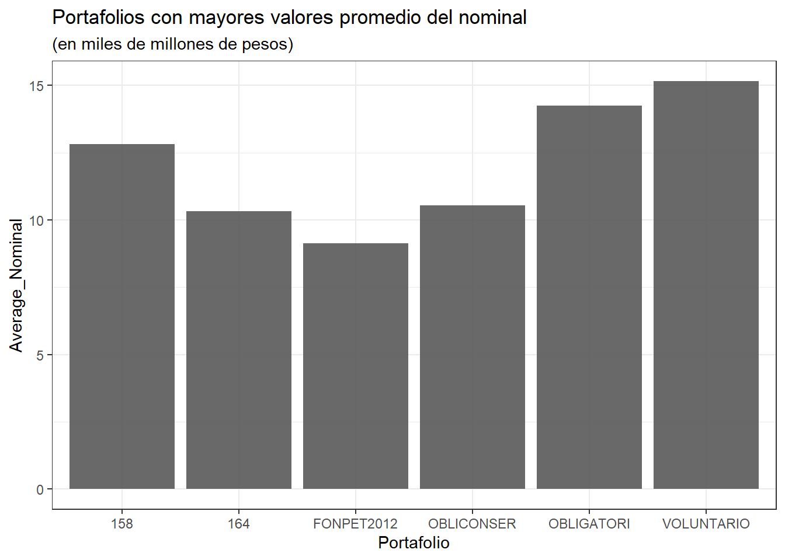
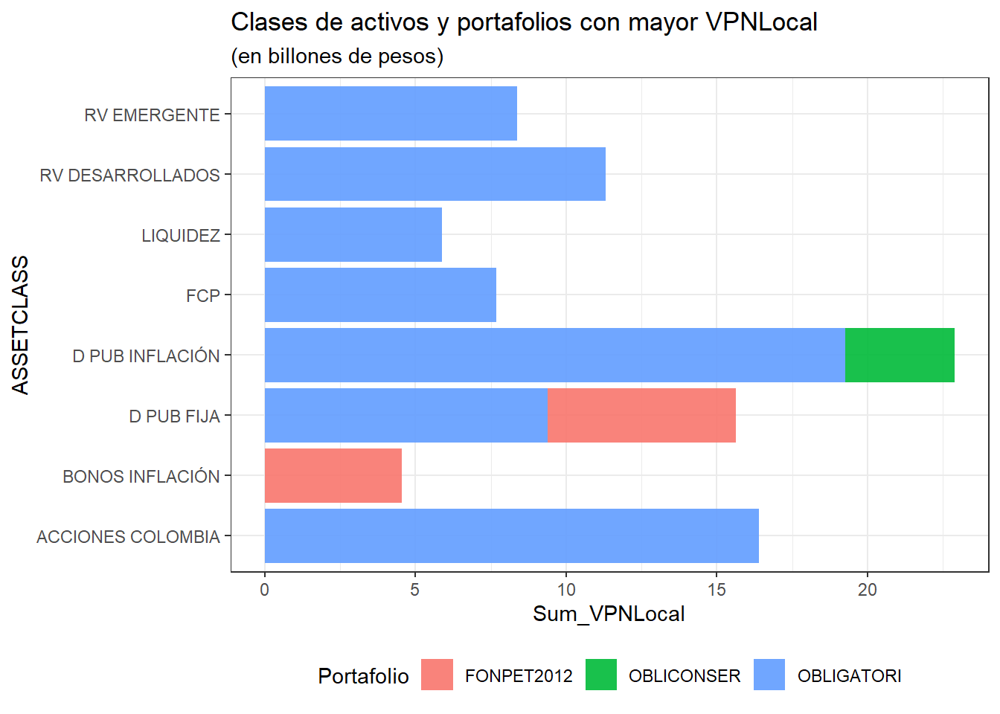
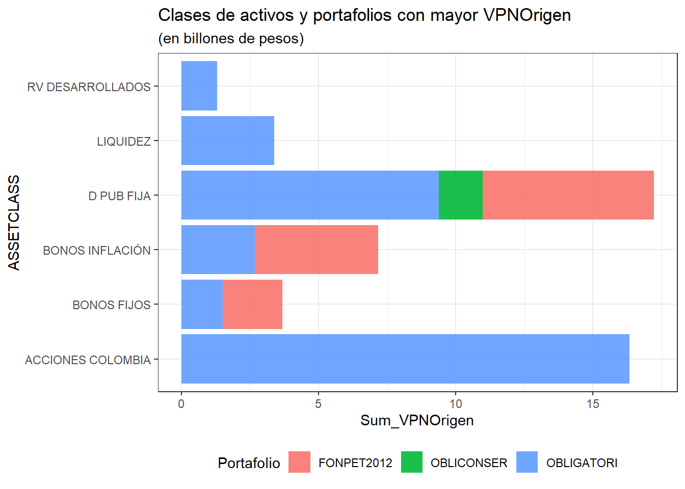
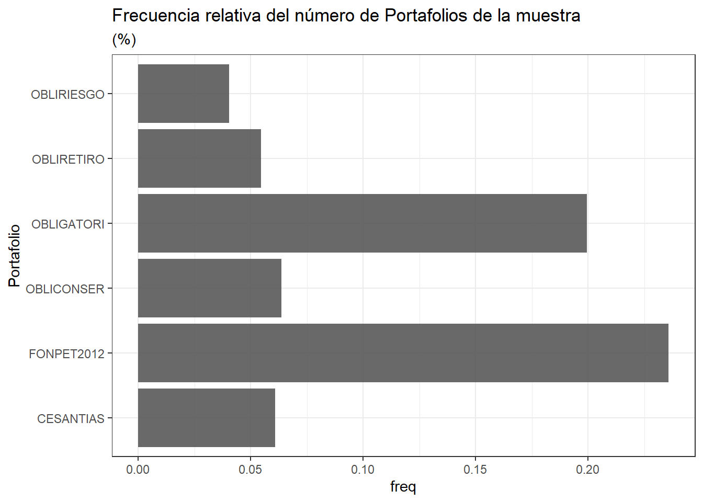
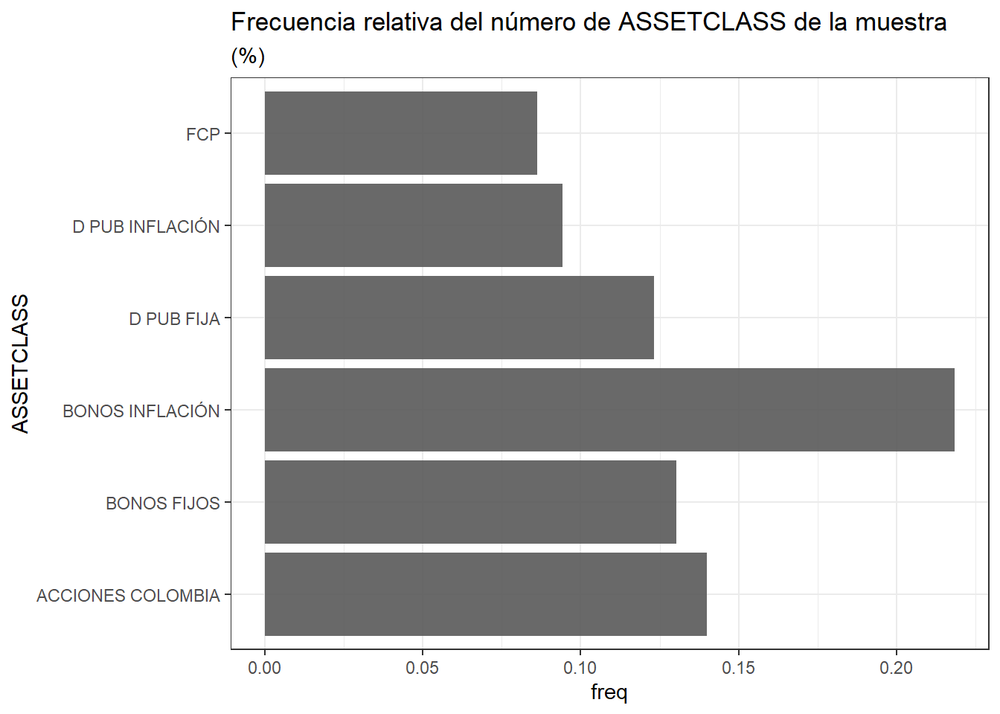
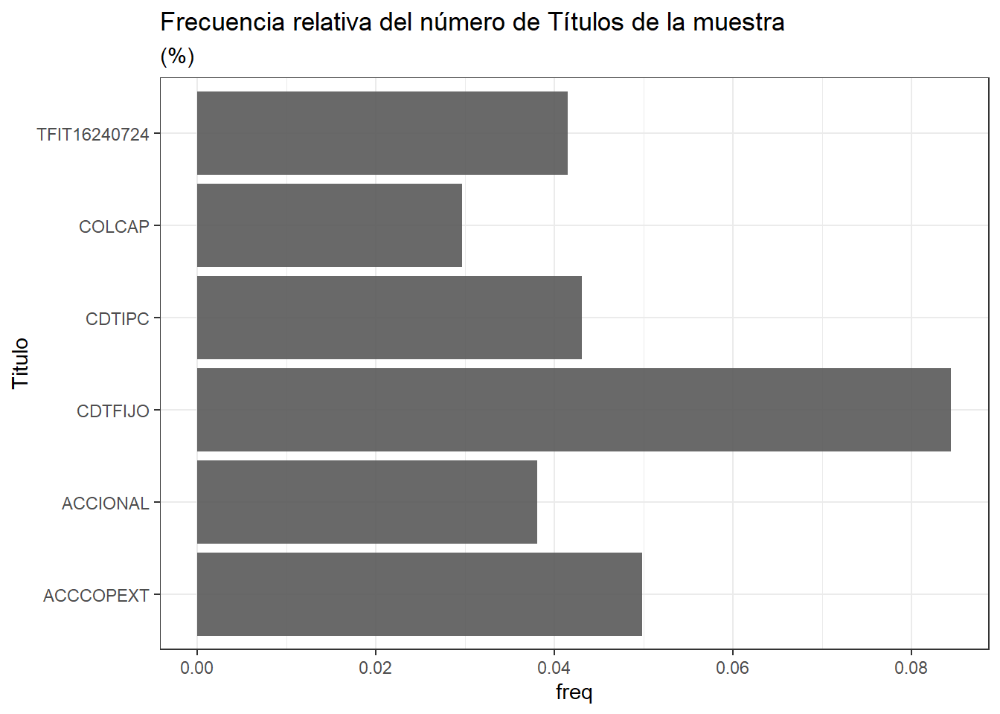
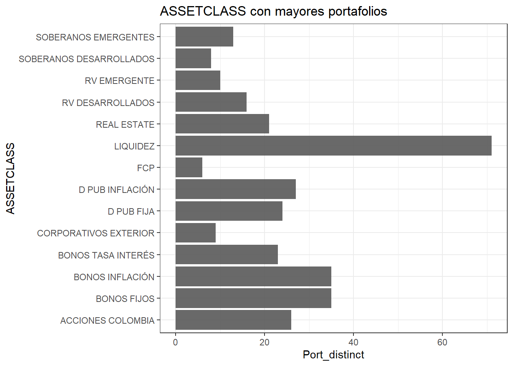
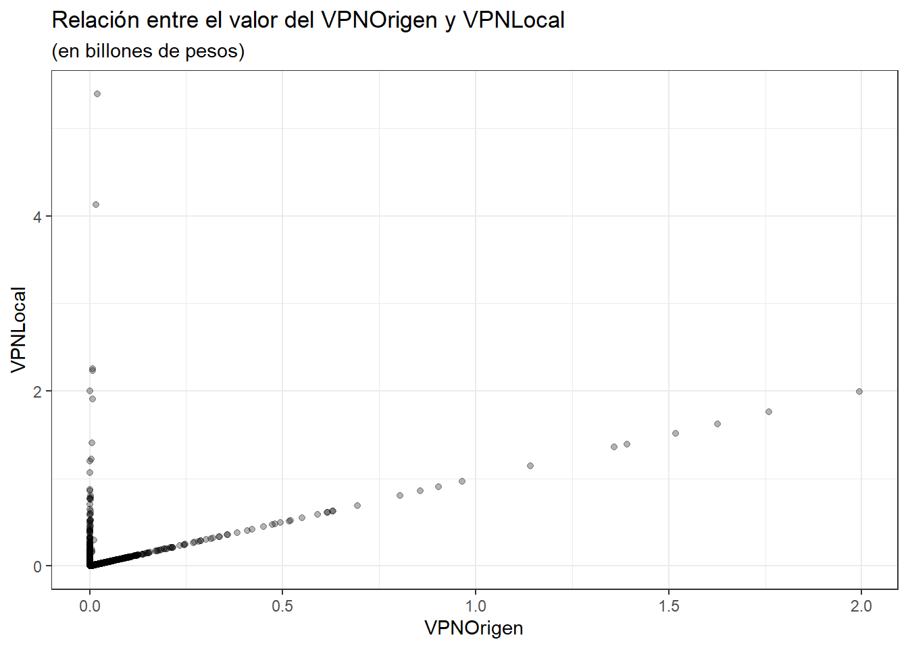

library(readxl)
library(tidyverse)Punto 5 - Programación en R
Solución
De no contar con el programa en su computador, descargue por favor de internet R y R Studio. A continuación, encontrará los links para efectuar la descarga;
- R Studio
https://rstudio.com/products/rstudio/download/#download
- R
https://cran.r-project.org/bin/windows/base/
Desde la terminal de R Studio, realizar el siguiente ejercicio:
- Importe la base de datos “Base.xlsx”. Pista: Para importar información desde Excel, descargue el complemento openxlsx, cárguelo con el comando library() e importe el documento con la función read.xlsx(). Llame a esta base de datos data.
- Cree una nueva columna llamada nommiles que equivalga a la columna Nominal divida por 1000.
- Cree un dataframe llamado dataprom, que calcule el promedio del Nominal por Portafolio.
- Cree un dataframe llamado datatot, que calcule la suma del VPN Local por Asset Class y por Portafolio.
- Cree un dataframe llamado data2, partiendo de la base data, que muestre la toda la información únicamente para el portafolio OBLIGATORI.
Solución:
Para generar el presente documento se utilizaron herramientas estadísticas del Tidyverse de Wickham, Çetinkaya-Rundel, and Grolemund (2023). Por lo tanto, antes que nada debemos cargar las siguientes librerías:
Punto 1
Cargamos la base de datos:
data <- read_excel("Base.xlsx")
data# A tibble: 6,404 × 8
Fecha Portafolio ASSETCLASS Numtit Titulo Nominal VPNOrigen
<dttm> <chr> <chr> <dbl> <chr> <dbl> <dbl>
1 2019-02-28 00:00:00 ADMINISTRA LIQUIDEZ 37931 FONDO… 9.20e 4 3.39e 9
2 2019-02-28 00:00:00 ADMINISTRA D PUB FIJA 38170 EPMM1… 1.5 e10 1.52e10
3 2019-02-28 00:00:00 ADMINISTRA D PUB FIJA 38312 EPM_0… 1 e10 1.00e10
4 2019-02-28 00:00:00 ADMINISTRA D PUB FIJA 38313 EPM_0… 1 e10 1.00e10
5 2019-02-28 00:00:00 ADMINISTRA D PUB FIJA 38315 EPMM1… 5 e 9 5.07e 9
6 2019-02-28 00:00:00 ADMINISTRA BONOS FIJOS 38683 BDAV2… 9 e 9 9.50e 9
7 2019-02-28 00:00:00 ADMINISTRA BONOS TASA IN… 38718 CDTIB… 5 e 9 5.03e 9
8 2019-02-28 00:00:00 ADMINISTRA BONOS FIJOS 38776 BDAV2… 1 e 9 1.06e 9
9 2019-02-28 00:00:00 ADMINISTRA LIQUIDEZ 39018 FONDO… 1.51e 5 1.54e 9
10 2019-02-28 00:00:00 ADMINISTRA BONOS TASA IN… 39151 CDTIB… 1.5 e10 1.50e10
# ℹ 6,394 more rows
# ℹ 1 more variable: VPNLocal <dbl>Punto 2
Generamos una columna que consiste en el \(\frac{Nominal}{1000}\):
data <- data |>
mutate(nommiles = Nominal/1000)
data# A tibble: 6,404 × 9
Fecha Portafolio ASSETCLASS Numtit Titulo Nominal VPNOrigen
<dttm> <chr> <chr> <dbl> <chr> <dbl> <dbl>
1 2019-02-28 00:00:00 ADMINISTRA LIQUIDEZ 37931 FONDO… 9.20e 4 3.39e 9
2 2019-02-28 00:00:00 ADMINISTRA D PUB FIJA 38170 EPMM1… 1.5 e10 1.52e10
3 2019-02-28 00:00:00 ADMINISTRA D PUB FIJA 38312 EPM_0… 1 e10 1.00e10
4 2019-02-28 00:00:00 ADMINISTRA D PUB FIJA 38313 EPM_0… 1 e10 1.00e10
5 2019-02-28 00:00:00 ADMINISTRA D PUB FIJA 38315 EPMM1… 5 e 9 5.07e 9
6 2019-02-28 00:00:00 ADMINISTRA BONOS FIJOS 38683 BDAV2… 9 e 9 9.50e 9
7 2019-02-28 00:00:00 ADMINISTRA BONOS TASA IN… 38718 CDTIB… 5 e 9 5.03e 9
8 2019-02-28 00:00:00 ADMINISTRA BONOS FIJOS 38776 BDAV2… 1 e 9 1.06e 9
9 2019-02-28 00:00:00 ADMINISTRA LIQUIDEZ 39018 FONDO… 1.51e 5 1.54e 9
10 2019-02-28 00:00:00 ADMINISTRA BONOS TASA IN… 39151 CDTIB… 1.5 e10 1.50e10
# ℹ 6,394 more rows
# ℹ 2 more variables: VPNLocal <dbl>, nommiles <dbl>Punto 3
Promedio del nominal por portafolio:
dataprom <- data |>
select(Portafolio, Nominal) |>
na.omit() |>
group_by(Portafolio) |>
summarise(Average_Nominal = mean(Nominal)) |>
arrange(desc(Average_Nominal))
dataprom# A tibble: 71 × 2
Portafolio Average_Nominal
<chr> <dbl>
1 VOLUNTARIO 15156062398.
2 OBLIGATORI 14252198068.
3 158 12815193282.
4 OBLICONSER 10540517386.
5 164 10338634124.
6 FONPET2012 9145578185.
7 ADMINISTRA 8131667241.
8 103 7821264561.
9 113 6626700499.
10 CESANTIACP 6531178147.
# ℹ 61 more rowsPromedio del nominal (en miles) por portafolio:
dataprom2 <- data |>
select(Portafolio, nommiles) |>
na.omit() |>
group_by(Portafolio) |>
summarise(Average_nommiles = mean(nommiles)) |>
arrange(desc(Average_nommiles))
dataprom2# A tibble: 71 × 2
Portafolio Average_nommiles
<chr> <dbl>
1 VOLUNTARIO 15156062.
2 OBLIGATORI 14252198.
3 158 12815193.
4 OBLICONSER 10540517.
5 164 10338634.
6 FONPET2012 9145578.
7 ADMINISTRA 8131667.
8 103 7821265.
9 113 6626700.
10 CESANTIACP 6531178.
# ℹ 61 more rowsAdicional, se construyó un gráfico de barras que muestra los principales portafolios, que generan los mayores valores promedio del nominal (en miles de millones de pesos):

Punto 4
Suma del VPNLocal por asset class y por portafolio:
datatot <- data |>
select(Portafolio, ASSETCLASS, VPNLocal) |>
na.omit() |>
group_by(ASSETCLASS, Portafolio) |>
summarise(Sum_VPNLocal = sum(VPNLocal)) |>
arrange(desc(Sum_VPNLocal))
datatot# A tibble: 324 × 3
# Groups: ASSETCLASS [14]
ASSETCLASS Portafolio Sum_VPNLocal
<chr> <chr> <dbl>
1 D PUB INFLACIÓN OBLIGATORI 1.93e13
2 ACCIONES COLOMBIA OBLIGATORI 1.64e13
3 RV DESARROLLADOS OBLIGATORI 1.13e13
4 D PUB FIJA OBLIGATORI 9.38e12
5 RV EMERGENTE OBLIGATORI 8.37e12
6 FCP OBLIGATORI 7.67e12
7 D PUB FIJA FONPET2012 6.24e12
8 LIQUIDEZ OBLIGATORI 5.88e12
9 BONOS INFLACIÓN FONPET2012 4.55e12
10 D PUB INFLACIÓN OBLICONSER 3.61e12
# ℹ 314 more rowsAdicional, se construyó un gráfico de barras que muestra los principales activos y portafolios que generan más VPNLocal (en billones de pesos):

Extra
Adicional, se pueden observar en el siguiente gráfico los principales activos y portafolios que generan más VPNOrigen (en billones de pesos).
datatot2 <- data |>
select(Portafolio, ASSETCLASS, VPNOrigen) |>
na.omit() |>
group_by(ASSETCLASS, Portafolio) |>
summarise(Sum_VPNOrigen = sum(VPNOrigen)) |>
arrange(desc(Sum_VPNOrigen))
datatot2# A tibble: 324 × 3
# Groups: ASSETCLASS [14]
ASSETCLASS Portafolio Sum_VPNOrigen
<chr> <chr> <dbl>
1 ACCIONES COLOMBIA OBLIGATORI 1.63e13
2 D PUB FIJA OBLIGATORI 9.38e12
3 D PUB FIJA FONPET2012 6.24e12
4 BONOS INFLACIÓN FONPET2012 4.50e12
5 LIQUIDEZ OBLIGATORI 3.39e12
6 BONOS INFLACIÓN OBLIGATORI 2.68e12
7 BONOS FIJOS FONPET2012 2.16e12
8 D PUB FIJA OBLICONSER 1.60e12
9 BONOS FIJOS OBLIGATORI 1.51e12
10 RV DESARROLLADOS OBLIGATORI 1.30e12
# ℹ 314 more rows
Punto 5
Base de datos filtrada para el portafolio OBLIGATORI:
data2 <- data |>
filter(Portafolio == "OBLIGATORI")
data2# A tibble: 1,277 × 9
Fecha Portafolio ASSETCLASS Numtit Titulo Nominal VPNOrigen
<dttm> <chr> <chr> <dbl> <chr> <dbl> <dbl>
1 2019-02-28 00:00:00 OBLIGATORI D PUB INFLACI… 91123 TUVT1… 1 e 8 1.05e 8
2 2019-02-28 00:00:00 OBLIGATORI D PUB FIJA 91135 TFIT1… 8.05e10 9.23e10
3 2019-02-28 00:00:00 OBLIGATORI FCP 91136 FCP_N… 1.56e 0 1.69e 4
4 2019-02-28 00:00:00 OBLIGATORI BONOS FIJOS 91138 CDTFI… 1.02e11 1.04e11
5 2019-02-28 00:00:00 OBLIGATORI D PUB FIJA 91139 TFIT0… 5 e 9 5.06e 9
6 2019-02-28 00:00:00 OBLIGATORI FCP 91140 FONDC… 8.86e 4 8.86e 5
7 2019-02-28 00:00:00 OBLIGATORI FCP 91141 FONDC… 1.86e 6 1.06e 7
8 2019-02-28 00:00:00 OBLIGATORI D PUB FIJA 91142 TFIT0… 2.5 e10 2.53e10
9 2019-02-28 00:00:00 OBLIGATORI D PUB FIJA 91143 TFIT0… 2.27e10 2.30e10
10 2019-02-28 00:00:00 OBLIGATORI D PUB FIJA 91144 TFIT1… 2.28e10 2.30e10
# ℹ 1,267 more rows
# ℹ 2 more variables: VPNLocal <dbl>, nommiles <dbl>Estadísticas descriptivas
A continuación, se presentan algunas de las principales estadísticas descriptivas de la base de datos:



¿Cuáles son las clases de activos (ASSETCLASS) con la mayor diversidad de Portafolios?
df_AC <- data |>
group_by(ASSETCLASS) |>
summarise(Port_distinct = n_distinct(Portafolio)) |>
arrange(desc(Port_distinct))
df_AC# A tibble: 14 × 2
ASSETCLASS Port_distinct
<chr> <int>
1 LIQUIDEZ 71
2 BONOS FIJOS 35
3 BONOS INFLACIÓN 35
4 D PUB INFLACIÓN 27
5 ACCIONES COLOMBIA 26
6 D PUB FIJA 24
7 BONOS TASA INTERÉS 23
8 REAL ESTATE 21
9 RV DESARROLLADOS 16
10 SOBERANOS EMERGENTES 13
11 RV EMERGENTE 10
12 CORPORATIVOS EXTERIOR 9
13 SOBERANOS DESARROLLADOS 8
14 FCP 6
¿Cuál es la relación que existe entre el valor del VPN Origen y el valor del VPN Local?

References
Wickham, Hadley, Mine Çetinkaya-Rundel, and Garrett Grolemund. 2023. R for Data Science. " O’Reilly Media, Inc.".